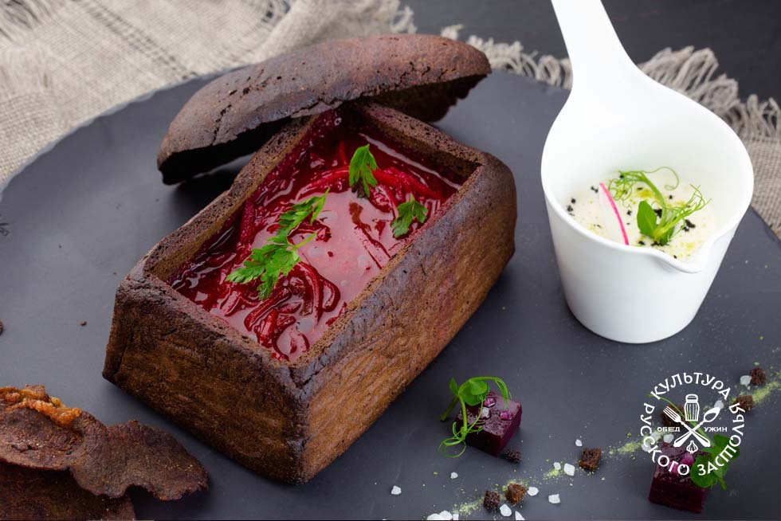

Family’s Borscht Recipe (Beet Soup)
Borscht it is a vegetable soup with meat or mushrooms,
the main first dish of Ukrainian cuisine.
It has gained widespread international recognition.
Borscht, along with dumplings, is to some extent a
symbol of Ukrainian national cuisine.
I love Mom’s Borsch so much,
as this is a memories of childhood, grandmother, village.
It’s best to have all of the ingredients prepped and ready to go
which makes this soup super easy and care free. Start by peeling,
grating, chopping, slicing and dicing all of the vegetables for borscht.
Once your potatoes are peeled and sliced, transfer them to a bowl
of cold water to keep them from discoloring until ready for use.
Ingredients:
For Borscht:
- 3 medium beets peeled and grated
- 4 Tbsp olive oil divided
- 4 cups reduced sodium chicken broth + 6 cups water
- 3 medium yukon potatoes peeled and sliced into bite-sized pieces
- 2 carrots peeled and thinly sliced
For Zazharka (Mirepoix):
- 2 celery ribs trimmed and finely chopped
- 1 small red bell pepper finely chopped, optional
- 1 medium onion finely chopped
- 4 Tbsp ketchup or 3 Tbsp tomato sauce
Additional Flavorings:
- 1 can white cannelini beans with their juice
- 2 bay leaves
- 2-3 Tbsp white vinegar or to taste
- 1 tsp sea salt or to taste
- 1/4 tsp black pepper freshly ground
- 1 large garlic clove pressed
- 3 Tbsp chopped dill
Instructions:
- Peel, grate and/or slice all vegetables,
keeping sliced potatoes in cold water until ready to use.
- Heat a large soup pot (5 1/2 Qt or larger)
over medium/high heat and add 2 Tbsp olive oil.
Add grated beets and sauté 10 minutes,
stirring occasionally until beets are softened.
- Add 4 cups broth and 6 cups water.
Add sliced potatoes and sliced carrots
then cook for 10-15 minutes or until easily pierced with a fork.
- While potatoes are cooking, place a large skillet over medium/high heat
and add 2 Tbsp oil. Add chopped onion, celery and bell pepper.
Saute stirring occasionally until softened and lightly golden (7-8 minutes).
Add 4 Tbsp Ketchup and stir fry 30 seconds then transfer to the soup pot
to continue cooking with the potatoes.
- When potatoes and carrots reach desired softness,
add 1 can of beans with their juice, 2 bay leaves, 2-3 Tbsp white vinegar,
1 tsp salt, 1/4 tsp black pepper, 1 pressed garlic clove,
and 3 Tbsp chopped dill. Simmer for an additional 2-3 minutes
and add more salt and vinegar to taste.
Borscht has sweet and sour taste, tantalizing mouth-watering aroma.
Serve with a dollop of sour cream or real mayo.

